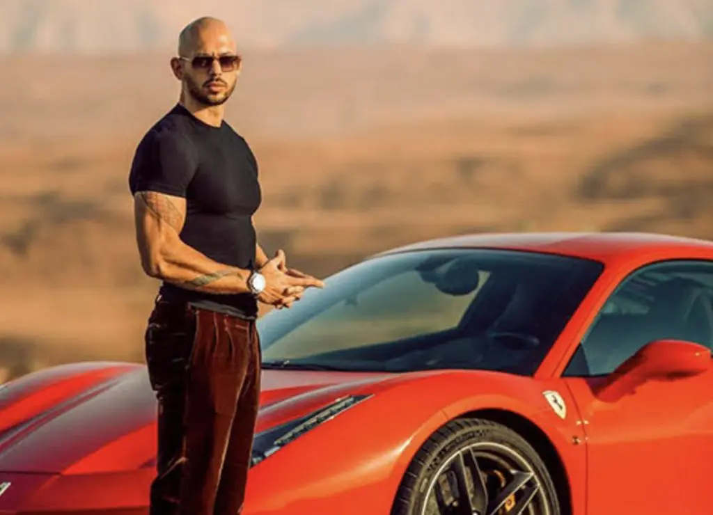
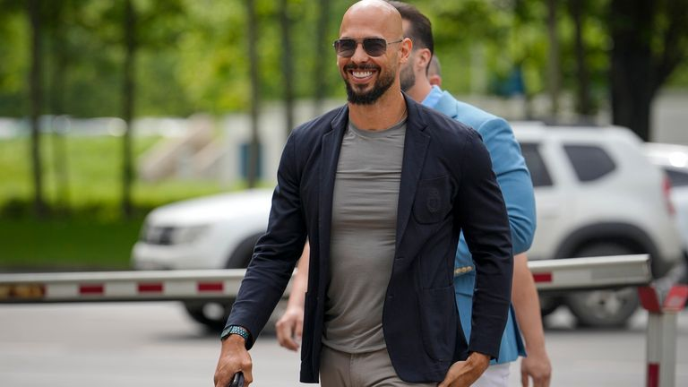

Birth and Family
Education
Andrew Tate began his kickboxing career in 2005 and quickly rose to prominence. He won four world championship titles, showcasing his dedication and skill in the sport. His most notable victories include winning the ISKA Full Contact Cruiserweight Championship.
Beyond sports, Andrew Tate is a successful entrepreneur. He founded multiple businesses, including a webcam modeling company and a subscription-based lifestyle coaching service. His ventures reflect his keen business acumen and ability to capitalize on emerging opportunities.
Outside his professional pursuits, Andrew enjoys luxury cars, travel, and chess. His love for chess is a tribute to his father's legacy.